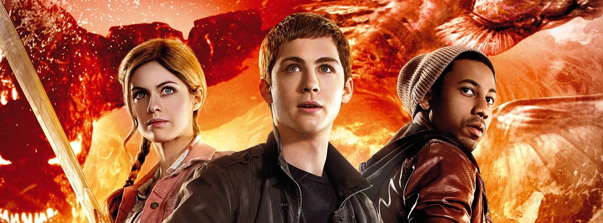

Percy Jackson: Sea of Monsters is a major feature film involving complex visual effects and mythical creature sequences. During the production, I worked as part of the BGprep (Background Preparation) team at the Academy Award-winning studio Rhythm & Hues.
In my role as Technical Director within the BGprep team, I was responsible for the essential foundation of many VFX shots. My work included high-precision rotoscoping, dustbusting, background prep, and wire-removal. I operated within a high-stakes, large-scale production pipeline, ensuring that the plates were perfectly prepared for the lighting and compositing departments.

The "invisble art" of BGprep is crucial for the final quality of a film. We focused on pixel-perfect accuracy to ensure that digital creatures and effects could be integrated seamlessly into the live-action plates without any visual artifacts from the original production equipment (wires, rigs, etc.).
Role: Technical Director (BGprep)
Type: Feature Film VFX
Year: 2013
Studio: Rhythm & Hues Studios
Tools & Tech: Proprietary Studio Tools, Nuke, Production Tracking Pipelines
{kind=link}